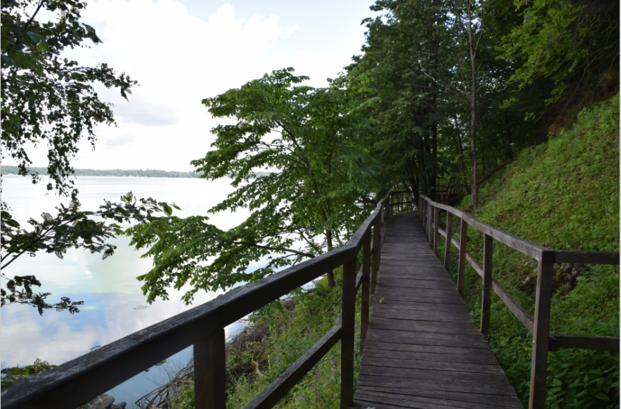
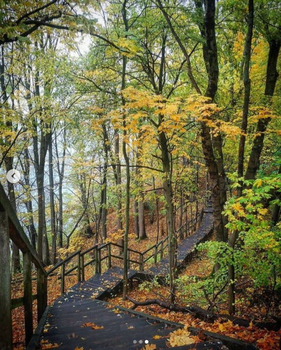

Kaunas Marios Regional Park is famous for many picturesque places 🙌
This time we want to present the Žiegždriai Geological Hiking Trail
The trail starts in Žiegždriai settlement, located in Kaunas district, near Kaunas lagoon; 1.6 km long;
The grove Žiegždriai lime is the thickest tree on the left bank of Kaunas Lagoon. Its circumference is 4.3 m, height 25 m, age over 100 years;
The trail is built on the rocky shore of Kaunas Lagoon, so get ready for the stair marathon😅
Admire the conglomerate outcrop, which is the greatest value and interest of this trail, fascinating with artistically layered rock textures and caves;
- Full of views of Kaunas Lagoon
- The trail is not radial, so you will have to go back on the same route
- Not suitable for prams